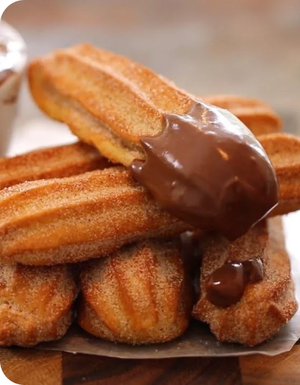

<div class="tudo">
<div class="listaLateral">
  <button mat-stroked-button>Bolos e tortas</button>
  <button mat-stroked-button>Carnes</button>
  <button mat-stroked-button>Aves</button>
  <button mat-stroked-button>Saladas e molhos</button>
  <button mat-stroked-button>Massas</button>
  <button mat-stroked-button>Bebidas</button>
  <button mat-stroked-button>Doce e sobremesas</button>
  <button mat-stroked-button>Lanches</button>
</div>

  <mat-card class="example-card">
    <mat-card-header>
      <mat-card-title>Churros com chocolate</mat-card-title>
    </mat-card-header>
    
    <mat-card-content>
      <div class="rendimentoTempo">
      <h3>Rendimento</h3>
      <h3>Tempo de preparo</h3>
    </div>
      <div class="footer">
      <mat-icon>person</mat-icon>
      <h1>|</h1>
      <h3> min</h3>
    </div>
    </mat-card-content>
  </mat-card>

</div>
